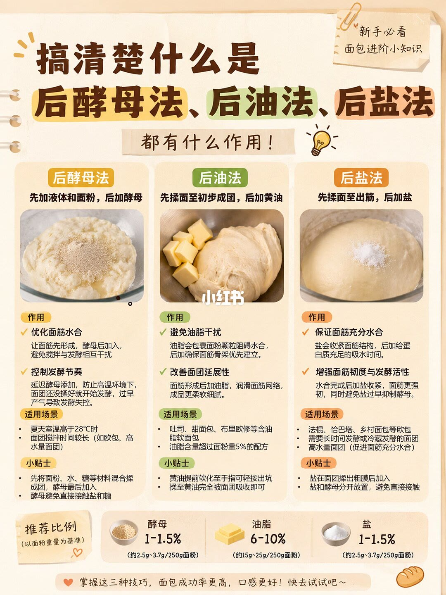

图文实录 · 小红书 · 菜又菜
后酵母、后油、后盐？我终于搞清楚了！
夏天面团一边揉一边发，作者把原因放在加料顺序上。一张图把后酵母、后油、后盐拆开：先让面粉吃水，再加油，盐和酵母都不要一上来就和对方贴在一起。
1/1
三种「后加」各管一件事
后酵母：先加液体和面粉，面团成形后再加酵母。图上说这样面筋先吸水，发酵起步被推迟，适合室温高于 28℃、或者揉面时间很长的高水量和欧包。酵母不要直接碰到盐和糖。
后油：先揉成团，再加黄油。油脂会包住面粉、妨碍吸水，所以等面筋骨架出来再加。适用吐司、甜面包、布里欧，图上写油脂超过面粉重量 5% 时更该后加。黄油要软到手指能按下坑，揉到完全吸收。
后盐：面团能拉出粗糙薄膜后再加盐。盐会收紧面筋，晚加是为了让蛋白先吃够水。适用法棍、恰巴塔、乡村面包、长时间冷藏发酵和高水量面团。盐和酵母先分开。
页底用量按面粉重量：酵母 1–1.5%（250 克面粉约 2.5–3.7 克），油脂 6–10%（约 15–25 克），盐 1–1.5%（约 2.5–3.7 克）。作者自己的顺序写在说明里：面粉、盐、糖先揉到厚膜，再加黄油，接近手套膜再加酵母，最后揉两三分钟。这和「后盐」的定义不完全同一条路径，图上的后盐是盐晚于出膜，作者正文里盐是一开始就和面粉在一起。

汇总
先分清你在解决哪一个问题
面团在揉的时候就发起来，图上指向后酵母，尤其是高于 28℃。油脂多的甜面包指向后油。高水量、长时间发酵指向后盐。用量是这张图的经验比例，不是某一款面粉的配方。作者正文的加盐时机和图表的后盐定义不一致，照做时要选定一种，不要两套叠在一起。